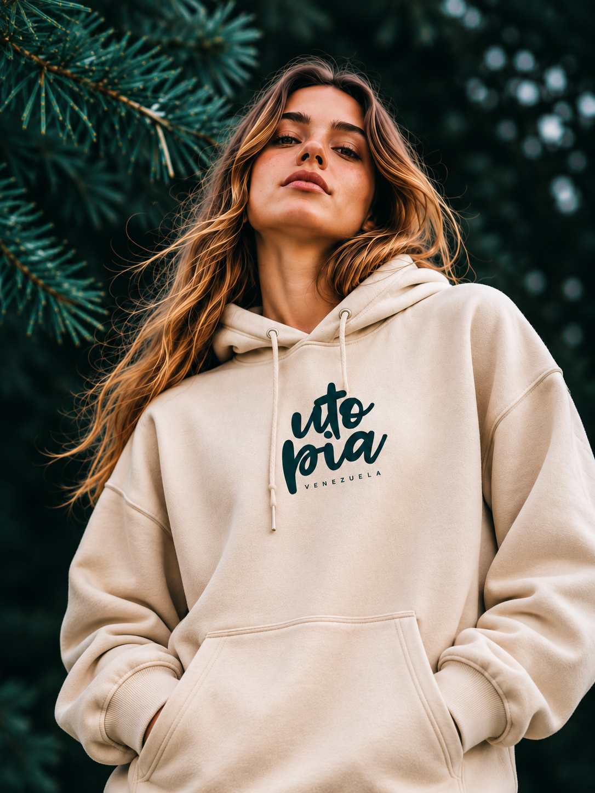

Portfolio / Selected projects
The Work
A collection of identities, websites, and product experiences built around one idea: make it matter.

Brand Identity · Fashion · Art Direction
THE BROOKON JANES
BRAND NEW SOCIALLY-DRIVENRESIDENCES
Website Design · Art Direction · UX/UI

Brand Identity · Packaging

UX/UI · Digital Product

Editorial · Art Direction

Web Design · Creative Direction

Visual Identity · Graphic Design

Software UX/UI · Web
Conceptual projects and stock imagery are placeholders for the final portfolio.